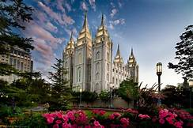
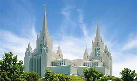
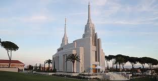
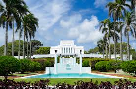

Temple Inn and Suites
Specializing in Hotel Accomodations near temples for the Chuch of Jesus Christ of Latter-Day Saints
Temples of the Church of Jesus Christ of Latter-Day Saints
What are temples?
Temples are literally houses of the Lord. They are places where individuals can go to make sacred promises with God, feel His spirit, and escape from the hectic demands of day-to-day life.
In February, 1853, the site for the Salt Lake Temple was dedicated for construction and the foundation was begun. In 1857, news that a potentially hostile United States army was approaching Utah was received. The prophet, Brigham Young, had the foundation covered with dirt to protect the project. The temple was dedicated on April 5, 1893, following a forty-year period of construction. Of those who had helped lay the cornerstone in 1853, only a few were still living.

The San Diego California Temple was the third temple built in California. Over 720,000 visitors attended the widely publicized open house of the San Diego California Temple. Situated near the upscale community of La Jolla in San Diego, the striking double towers of the San Diego California Temple soar above I-5 in heavily populated Southern California. Connecting the towers at the center is a supernal star-shaped atrium filled with a healthy, colorful garden. The atrium is accessed from the breathtaking two-story Celestial Room filled with towering art glass, suspended light fixtures, and featuring a grand staircase to an upper-level balcony.

The Rome Temple sits on 14.5 acres located in northeast Rome near the Grande Raccordo Anulare. The temple is part of a 15-acre religious and cultural center that will include a multifunctional meetinghouse, a visitors’ center, a family history center, and housing for visitors. The Rome Italy Temple will be dedicated on Sunday, March 10, through Tuesday, March 12.

The Surrounded by lush Hawaiian flora on a gently rising hill that features cascading pools and a large fountain, the Laie Hawaii Temple graces the north shore of Oahu just a half mile from the Pacific Ocean. Travelers along Kamehameha Highway can't miss the striking Hale Laa Boulevard that leads the short distance from the highway to the temple. The Laie Hawaii Temple was the first temple built in Polynesia (and in Hawaii). The Laie Hawaii Temple was the first temple "brought to the people," as it was the first temple dedicated outside of the state (or territory) where Church Headquarters was located. The Laie Hawaii Temple was the first temple built outside of the continental United States.